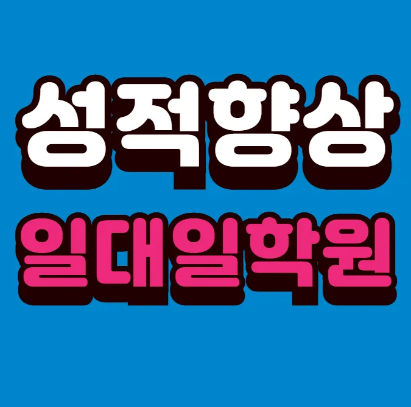

학부모님은 아이가 어떤 학습 스타일을 가지고 있는지 먼저 살펴보는 것이 중요해요. 학생은 스스로 목표를 설정하고 동기부여를 유지할 수 있는 환경을 원해요. 선생님은 개별 피드백을 꾸준히 제공하고 진도 관리가 체계적인 곳을 추천해요. 주변 이웃은 신창동 초등학원 시설이 안전하고 교통이 편리한 곳을 선호해요. 전문가 의견에 따르면 교육 철학이 명확하고 커리큘럼이 단계적으로 설계된 곳이 장기적인 성장에 도움이 된다고 해요. 신창동은 다양한 교육 자원이 모여 있어 선택의 폭이 넓다는 장점이 있어요.
학년마다 학습 목표와 집중력이 다르게 나타나기 때문에 맞춤형 프로그램을 선택하는 것이 핵심이에요. 초등 저학년은 기초 개념을 놀이와 그림으로 자연스럽게 익히는 것이 효과적이에요. 초등 고학년은 과목별 심화 문제를 풀면서 논리적 사고를 키우는 단계에요. 중학생은 스스로 학습 계획을 세우고 실천하는 능력이 중요해요. 고등학생은 대학 입시 목표에 맞춰 전략적인 문제 풀이와 실전 모의고사가 필요해요. 전체 학년을 아우르는 프로그램은 복습 주기를 체계적으로 관리해 주는 것이 큰 장점이에요. 신창동은 신창동 초등학원가가 집중돼 있어 다양한 선택지를 비교하기 편리해요.
와와학습코칭센터는 개별 이해 포인트를 확인하는 질문 중심 수업으로 학생 스스로 답을 찾게 도와줘요. 주요 대상은 초등 과정과 중등 과정의 학습자이며, 초등 과정은 16만원, 중등 과정은 17만원 수준으로 책정돼요. 오답을 줄이기 위한 유형 정리 수업과 조용한 자동닫힘 기능이 적용된 출입문 덕분에 집중도가 높아져요. 학생 주도형 학습을 유도하는 구성과 실제 사례를 통한 차별화된 강점이 큰 매력으로 작용해요.
| 학원명 | 와와학습코칭학원 |
| 수강료 | 초등E1 160,000원 | 중등A1 170,000원 |
CURRICULUM
첫 번째, 직전 시험 오답을 중심으로 복습 시간을 배정해요. 두 번째, 과제 풀이 시간을 별도로 확보해 학생 스스로 문제 해결 능력을 키워요. 세 번째, 유사문제 풀이를 통해 개념 적용 연습을 강화해요. 네 번째, 정리 안 된 노트를 다시 펴는 불편함을 최소화하기 위해 디지털 자료를 활용해요.
학생들이 신창동 초등학원 선택 단계에서 흔히 겪는 실수는 주변 의견에만 의존해 객관적인 기준을 놓치는 경우입니다. 특히 신창동에서는 신창동 초등학원 밀집도가 높아 선택이 어려워지는데, 계획을 세우고 충분히 검토하는 시간이 부족하면 적합하지 않은 신창동 초등학원을 선택하게 됩니다. 등록 후에는 수업료와 스케줄을 정확히 파악하지 않아 불필요한 비용이 발생하거나 학습 효율이 떨어질 수 있어요. 학습 관리 단계에서는 목표 설정이 모호하거나 피드백을 무시해 학습 진도가 뒤처지는 경우가 많습니다. 이러한 실수를 예방하려면 초기 단계에서 목표와 기대치를 명확히 하고, 정기적인 점검과 조정을 통해 지속적으로 방향을 잡아 나가는 것이 중요합니다.
와와신창동 초등학원의 학습 전략은 단기 성과보다 장기 지속 가능성을 중시하고, 현재 학습 루틴을 진단해 집중도 높은 환경을 조성하고, 학교별 기출문제 난이도 조절을 통해 동기 부여를 강화하며, 발화 의도 분석을 활용해 학생 사고 패턴을 파악해 맞춤 지도에 반영해요
학습 스타일이 체계적이고 목표 지향적인 학생에게 특히 잘 맞아요. 예를 들어 고등학교 1학년으로 시험에 대한 불안감이 큰 학생이지만, 기본 개념은 이미 숙지한 경우에 효과적이에요. 개념을 외우는 데는 강점이 있지만, 깊이 있는 이해가 부족한 경우에도 이곳의 토론과 피드백을 통해 보완할 수 있어요. 스스로 학습 계획을 세우고 꾸준히 실천하려는 자세가 있는 학생이면 더욱 큰 성장을 기대할 수 있어요. 또한 부모와의 소통을 중요시하는 가정에서도 만족도가 높아요. 특히 시간 관리가 어려운 학생에게는 단계별 목표 설정과 체크리스트 활용이 큰 도움이 돼요. 또한, 학부모와의 정기적인 상담을 통해 학업 방향을 지속적으로 조정해요.
한 학부모는 시험 직후에도 교사가 꼼꼼히 점검해 주어 실망이 없었다고 전해요. 또 다른 학생은 기말고사 대비 스케줄을 미리 제공받아 준비가 수월했다고 말했어요. 한 이용자는 학습 공간이 차분하고 흐름이 자연스러워 집중이 잘 된다고 평가했어요. 또 한 명은 입학 전 상담에서 느낀 두려움이 친절한 안내 후 안심으로 바뀌었다고 전했어요. 마지막으로, 학부모와 함께 공유된 구체적인 성과 보고서에 감동을 받았다고 하는데, 이는 투명한 피드백 덕분이라고 생각해요.
